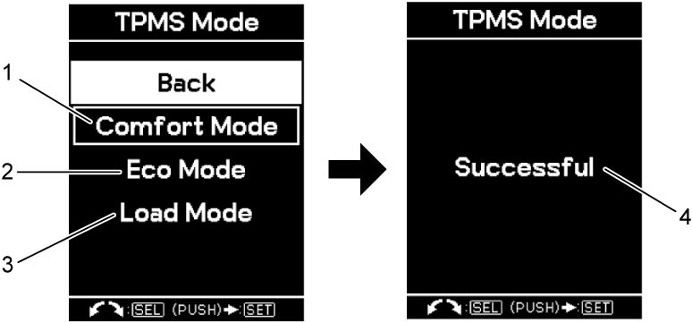

10D
| TPMS Setting Procedure |
The Tire Placard (1) affixed to vehicle body indicates three types of setting modes for TPMS, “Eco” (2), “Comfort” (3), and “Load (Laden)” (4). The system is set to “Comfort” by default.
 "Expand image")
When changing the tire pressure to suit the driving condition, the TPMS setting mode also needs to be changed as follows.
1)Set ignition “ON”.
2)Push and hold indicator selector knob (1) for more than 3 seconds.
3)Turn the indicator selector knob to left or right and select “TPMS” (2).
4)Turn the indicator selector knob to left or right and select “TPMS Mode” (3).

 "Expand image")
5)Select a mode from “Comfort” (1), “Eco” (2), or “Load (Laden)” (3) depending on tire pressure to be set.
6)Push indicator selector knob. Registration is complete if “Successful” (4) is displayed.

 "Expand image")
7)Adjust the tire pressure to the specified range depending on the configured setting mode.